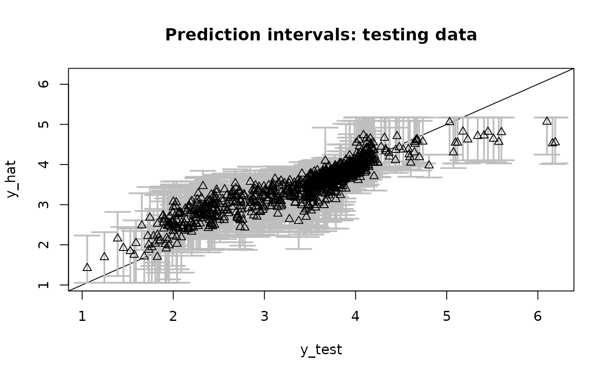

Given posterior predictive samples at X_test,
plot the point and interval estimates and compare
to the actual testing data y_test.
Value
plot of the testing data, point and interval predictions, and a summary of the empirical coverage
Examples
# \donttest{
# Simulate some data:
dat = simulate_tlm(n = 100, p = 5, g_type = 'step')
# Fit a semiparametric Bayesian linear model:
fit = sblm(y = dat$y, X = dat$X, X_test = dat$X_test)
#> [1] "3 sec remaining"
#> [1] "2 sec remaining"
#> [1] "Total time: 3 seconds"
# Evaluate posterior predictive means and intervals on the testing data:
plot_pptest(fit$post_ypred, dat$y_test,
alpha_level = 0.10) # coverage should be about 90%

#> [1] 0.907
# }